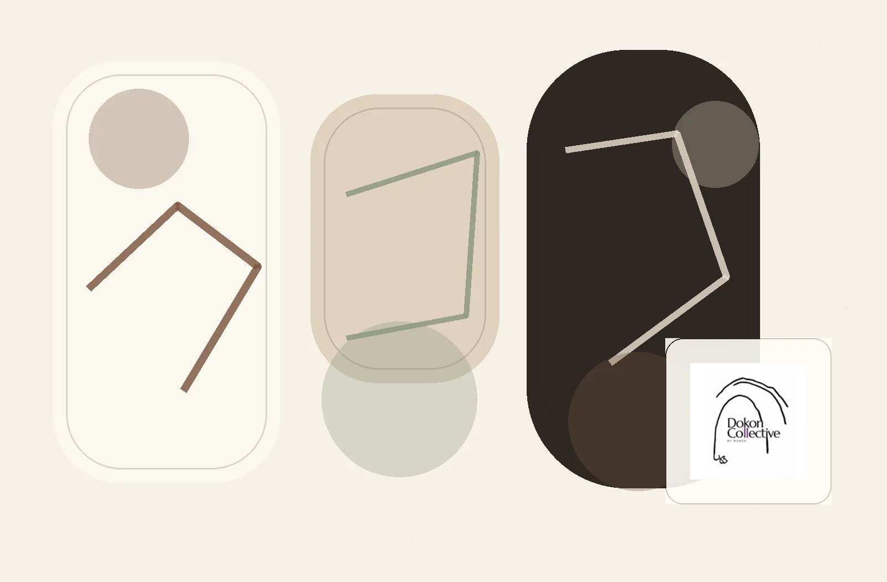
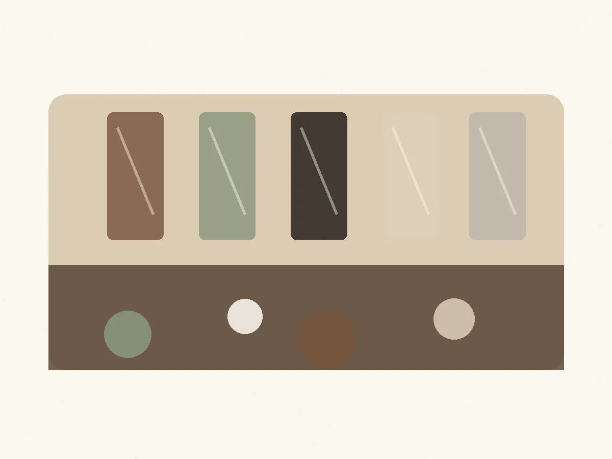
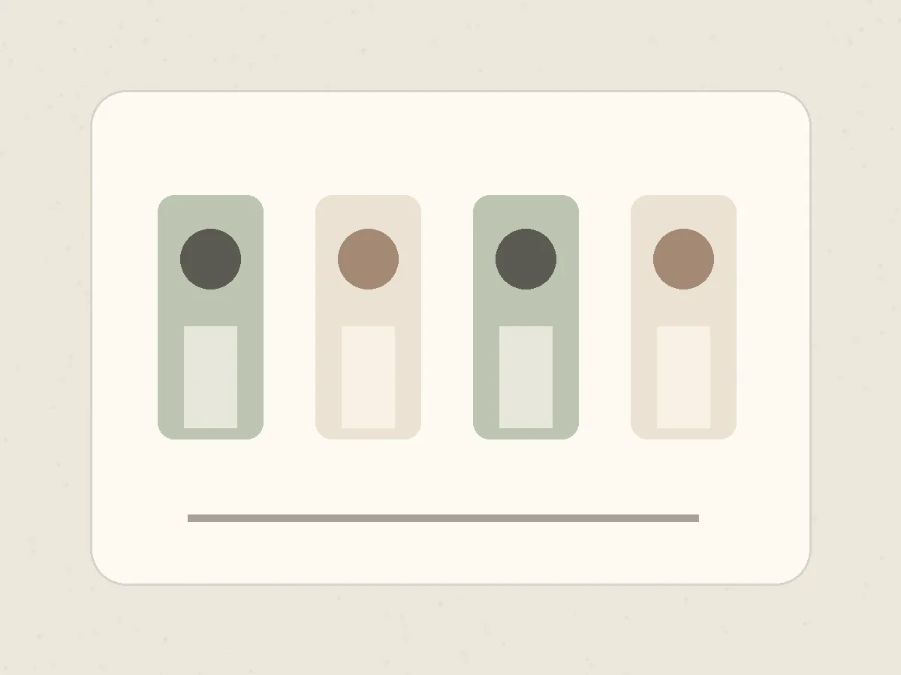
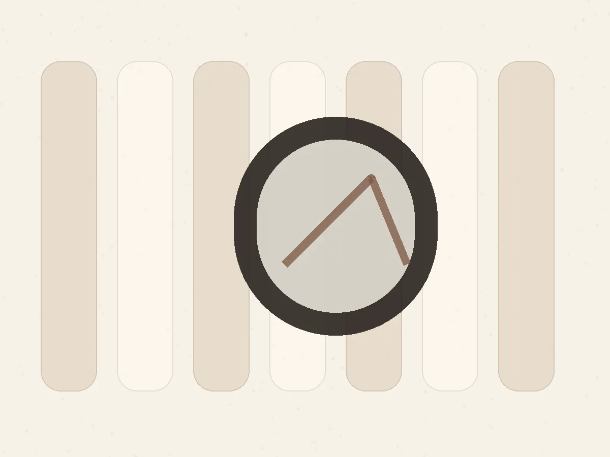

Art
Visual works, creative direction and selected studio projects presented with a calm editorial rhythm.
Art · Education · Specialities
A quieter landing page website for an art-led collective: refined enough for the brand, simple enough to use as one clean link.

Studio note
This sample keeps the visual language soft, textural and art-led. The page is designed for people arriving from Instagram, referrals or direct messages who need a clear introduction, a few branches, and fast contact paths.



Branches
Visual works, creative direction and selected studio projects presented with a calm editorial rhythm.
Workshops, learning formats and community sessions with a clean path for booking or inquiry.
A compact place to explain the collective’s distinctive practice, collaborations and appointment flow.
Best use case
Instead of sending people through a full website journey, this landing page gives them the essentials: who you are, what you do, what to explore, and how to contact you.
Contact
Use this area for studio location, WhatsApp, email, booking notes or seasonal workshop messages.